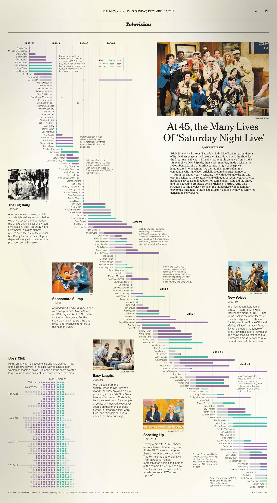

Post
SNL

Cast Members Timeline
In 1975, Lorne Michaels, a 30-year-old Canadian producer, pitched a radical idea to NBC: a live, 90-minute sketch-comedy show airing in the "dead zone" of Saturday night at 11:30 PM. Michaels likened the time slot to "a vacant lot on the edge of town," a fringe space granting him the liberty to experiment.
Fifty years later, the "Not Ready for Prime Time Players" have become the definitive institution of American comedy. On February 16th, Saturday Night Live (SNL) will celebrate its 50th anniversary and its 979th episode. What began as a countercultural experiment has evolved into a broadcasting juggernaut that has survived the decline of traditional television by mastering the delicate balance between rigid tradition and digital innovation.
While the show’s debut cast—including future legends Chevy Chase and John Belushi—faced skepticism regarding the show's longevity, SNL’s statistical footprint is now unrivaled in television history.
- Awards: SNL holds the record for the most Emmy nominations (331) and wins (90). By comparison, Game of Thrones trails in second place with 59 wins.
- Digital Reach: While the show retains a strong linear audience, its online presence is massive. More than 540 million users have liked its content on TikTok.
- Viewership Split: In the current season, approximately 8.4 million viewers watch via television and the Peacock app. However, online clips average 216 million views per episode across platforms like YouTube and X.
The Michaels Formula: Radical Conservatism
The show's endurance is often attributed to Lorne Michaels, now 80, who remains the executive producer. His longevity is rivaled in American entertainment history only by Alfred Hitchcock. Biographer Susan Morrison notes that Michaels’ specific genius lies not in his own performance, but in his ability to identify and wrangle talent.
Structurally, the show remains remarkably conservative. An observer from 1975 would recognize the format of the 2025 iteration:
- The Schedule: A punishing six-day production cycle leading to a live broadcast.
- The Format: Roughly ten sketches, two musical performances, and "Weekend Update."
- The Tools: The show still utilizes handwritten cue cards rather than teleprompters.
Michaels has maintained a strategy of "broad center" comedy. He frequently reminds writers that their audience exists in "all 50 states," not just coastal cities. This approach allows the show to tackle sensitive topics—including race and politics—without alienating the mainstream. For example, the segment "Weekend Update" often features hosts Colin Jost (white) and Michael Che (black) trading racially charged jokes to highlight absurdities in modern discourse.
Evolving for the Digital Age
Despite its rigid structure, SNL has successfully pivoted to accommodate changing media consumption habits. The turning point occurred in 2005 with the hiring of Andy Samberg, whose "Digital Shorts"—such as the viral hit Lazy Sunday—pioneered the format of pre-taped, shareable content.
This shift has also influenced casting. While early eras were defined by volatile personalities, the modern show prizes versatility. Alumni like Tina Fey, who transitioned from head writer to anchor to global star, exemplify the current pipeline. The cast has also grown significantly more diverse, moving away from the predominantly white male cohorts of the 1970s to better reflect the American demographic.
The Political Barometer
SNL remains a primary satirist of American politics, typically seeing ratings spikes during election cycles. Unlike competitors such as The Daily Show, which often caters specifically to liberal audiences, SNL attempts to be an equal-opportunity mocker. Recent seasons have featured James Austin Johnson’s rambling Donald Trump alongside Maya Rudolph’s ambitious Kamala Harris.
The Future of the Franchise
Critics have frequently declared SNL "dead," yet competitors—including Fox’s Mad TV and various international iterations of the SNL format—have failed to replicate its staying power. Larry David, a former SNL writer and creator of Seinfeld, has predicted the show could last "another 200 years."
However, the show faces two existential questions:
- The Medium: The future of SNL is inextricably tied to the health of NBC and linear television, which continues to struggle against streaming services.
- Succession: With Michaels having no immediate plans to retire, industry speculation regarding his successor focuses on alumni such as Tina Fey or Seth Meyers.
Whoever eventually takes the reins will face the daunting task of maintaining a 50-year-old institution that manages to be, in the words of its admirers, the only show to consistently combine the famous and the funny.
Boys’ Club
Hiring on “S.N.L.” has become increasingly diverse — six of the 10 new players in the past five years have been women or people of color. But looking at the casts over the long run, no season has featured more women than men.
A recreation of this infographic from the New York Times:
